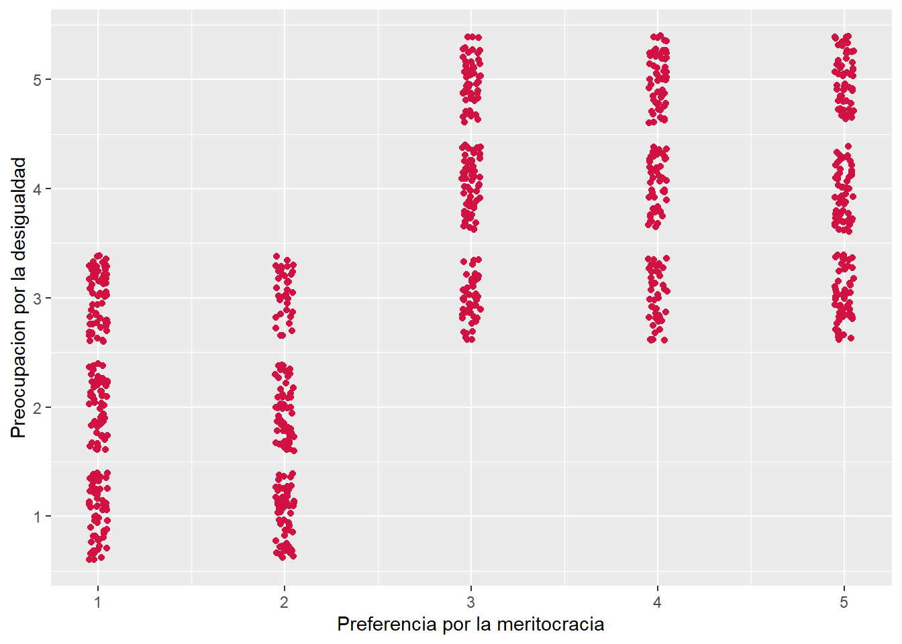

pacman::p_load(tidyverse, # Manipulacion datos
sjPlot, # Graficos y tablas
sjmisc, # Descriptivos
corrplot, # Correlaciones
psych, # Test estadísticos
kableExtra) # Tablas
options(scipen = 999) # para desactivar notacion cientifica
rm(list = ls()) # para limpiar el entorno de trabajoResolución ensayo prueba 2
load(url("https://github.com/cursos-metodos-facso/datos-ejemplos/raw/refs/heads/main/dataset5.RData"))Pregunta 1. ¿En qué medida se relacionan la preocupación por la desigualdad de las personas con su preferencia por la meritocracia?
1.1 Estime la correlación entre ambas variables utilizando R y genere un diagrama de dispersión (nube de puntos/scatterplot). Corte y pegue el código en el recuadro de abajo. (1p)
cor.test(dataset5$desigualdad, dataset5$meritocracia, method = "spearman") #especificamos metodo spearman
Spearman's rank correlation rho
data: dataset5$desigualdad and dataset5$meritocracia
S = 33072550, p-value < 0.00000000000000022
alternative hypothesis: true rho is not equal to 0
sample estimates:
rho
0.667583 sjPlot::plot_scatter(data = dataset5,
x = meritocracia,
y = desigualdad)
1.2 Justifique la elección del coeficiente de correlación seleccionado e interprete el resultado considerando inferencia estadística, magnitud y sentido del efecto. (3p)
Se empleó el coeficiente de correlación de Spearman debido a la naturaleza de las variables, en tanto desigualdad y autoritarismo corresponden a variables ordinales. El coeficiente da cuenta de una relacion positiva y grande, siguiendo los criterios de Cohen (1988) (\(r\) = 0.67). Es decir, a medida que aumenta la preferencia de meritocracia, también aumenta la preocupación por la desigualdad. La relación es estadísticamente significativa (\(p\) < 0.001), por ende es posible rechazar \(H_0\) sobre no asociación entre variables, entregando evidencia a favor de una relación entre ambas variables con un 99.9% de confianza.
Pregunta 2. A partir de la información presentada en la Tabla 1, responda las siguientes preguntas:
2.1 ¿Qué limitaciones presenta el método de tratamiento de los casos perdidos en el cálculo de la matriz? (1p)
Se eliminan del análisis todos los casos (filas) que tengan al menos un valor perdido en cualquiera de las variables consideradas. Esto puede reducir drásticamente el tamaño de la muestra efectiva, especialmente si el número de variables es grande o la proporción de datos faltantes es alta.
Si los datos perdidos no son completamente al azar (MCAR), la muestra resultante puede no ser representativa del conjunto original, introduciendo sesgos en las correlaciones o en las estimaciones posteriores.
Al disminuir el número de casos analizados, aumenta el error estándar de las estimaciones, reduciendo la potencia estadística de las pruebas y la confiabilidad de los resultados.
2.2a Estime y reporte una matriz de correlaciones para las variables de desigualdad, meritocracia y nivel educacional con otro método de tratamiento de casos perdidos. Corte y pegue el código de R correspondiente (1p)
cormat <- dataset5 %>%
dplyr::select(desigualdad, meritocracia, educ_rec)
sjPlot::tab_corr(cormat,
na.deletion = "pairwise", # espeficicamos tratamiento NA
triangle = "lower")| Preocupacion por la desigualdad | Preferencia por la meritocracia | Nivel educacional recodificado (universitario o no) |
|
| Preocupacion por la desigualdad | |||
| Preferencia por la meritocracia | 0.666*** | ||
| Nivel educacional recodificado (universitario o no) |
0.001 | -0.016 | |
| Computed correlation used pearson-method with pairwise-deletion. | |||
2.2b ¿Qué correlaciones de la matriz estimada en el punto anterior son estadísticamente significativas? ¿A qué nivel de confianza? (2p)
Preferencia por la meritocracia y preocupación por la desigualdad, estadísticamente significativa con un 99,9% de confianza
Pregunta 3. ¿Cómo se relaciona el nivel educacional con la preferencia por la meritocracia?
3.1 Reporte la tabla de contigencia y el cálculo de Chi2. Corte y pegue el código abajo. (1p)
dataset5 %>%
sjtab(educ_rec,
meritocracia_rec)| Nivel educacional recodificado (universitario o no) |
Preferencia por la meritocracia recodificado (prefiere o no) |
Total | |
|---|---|---|---|
| No prefiere | Prefiere | ||
| No universitaria | 216 | 347 | 563 |
| Universitaria o más | 118 | 169 | 287 |
| Total | 334 | 516 | 850 |
| χ2=0.493 · df=1 · φ=0.027 · p=0.483 | |||
chisq.test(dataset5$educ_rec, dataset5$meritocracia_rec) # adicional, ya que el Chi2 aparece en sjtab
Pearson's Chi-squared test with Yates' continuity correction
data: dataset5$educ_rec and dataset5$meritocracia_rec
X-squared = 0.49253, df = 1, p-value = 0.48283.2 Interprete el Chi2 en términos de inferencia y magnitud del efecto. (3p)
\(X^2\)=0.493 · \(df\)=1 · \(Cramer’s V\)=0.027 · \(p\)=0.483
Chi cuadrado no es estadísticamente significativo (p > 0.05), tamaño de efecto pequeño/débil según la V de Cramer.
Para finalizar, corra el comando sessionInfo() en R y pegue acá el resultado, para verificar la versión de R y de las librerías utilizadas.
sessionInfo()R version 4.3.2 (2023-10-31 ucrt)
Platform: x86_64-w64-mingw32/x64 (64-bit)
Running under: Windows 11 x64 (build 26100)
Matrix products: default
locale:
[1] LC_COLLATE=Spanish_Chile.utf8 LC_CTYPE=Spanish_Chile.utf8
[3] LC_MONETARY=Spanish_Chile.utf8 LC_NUMERIC=C
[5] LC_TIME=Spanish_Chile.utf8
time zone: America/Santiago
tzcode source: internal
attached base packages:
[1] stats graphics grDevices utils datasets methods base
other attached packages:
[1] kableExtra_1.4.0 psych_2.3.9 corrplot_0.92 sjmisc_2.8.9
[5] sjPlot_2.8.16 lubridate_1.9.3 forcats_1.0.0 stringr_1.5.1
[9] dplyr_1.1.4 purrr_1.0.2 readr_2.1.4 tidyr_1.3.0
[13] tibble_3.2.1 ggplot2_3.5.2 tidyverse_2.0.0
loaded via a namespace (and not attached):
[1] sjlabelled_1.2.0 tidyselect_1.2.0 viridisLite_0.4.2 farver_2.1.2
[5] fastmap_1.2.0 TH.data_1.1-2 pacman_0.5.1 bayestestR_0.16.0
[9] sjstats_0.18.2 digest_0.6.33 estimability_1.4.1 timechange_0.2.0
[13] lifecycle_1.0.4 survival_3.5-7 magrittr_2.0.3 compiler_4.3.2
[17] rlang_1.1.2 tools_4.3.2 yaml_2.3.7 knitr_1.45
[21] labeling_0.4.3 htmlwidgets_1.6.4 mnormt_2.1.1 xml2_1.3.5
[25] RColorBrewer_1.1-3 multcomp_1.4-25 withr_3.0.2 grid_4.3.2
[29] xtable_1.8-4 emmeans_1.10.6 scales_1.4.0 MASS_7.3-60
[33] dichromat_2.0-0.1 insight_1.3.0 cli_3.6.1 mvtnorm_1.2-3
[37] rmarkdown_2.28 generics_0.1.3 rstudioapi_0.17.1 performance_0.14.0
[41] modelr_0.1.11 tzdb_0.4.0 minqa_1.2.6 splines_4.3.2
[45] parallel_4.3.2 vctrs_0.6.4 boot_1.3-28.1 Matrix_1.6-3
[49] sandwich_3.1-0 jsonlite_1.8.7 hms_1.1.3 systemfonts_1.0.5
[53] glue_1.6.2 nloptr_2.0.3 codetools_0.2-19 stringi_1.8.2
[57] gtable_0.3.6 ggeffects_1.3.2 lme4_1.1-35.1 pillar_1.11.0
[61] htmltools_0.5.8.1 R6_2.6.1 evaluate_1.0.4 lattice_0.21-9
[65] haven_2.5.3 backports_1.4.1 broom_1.0.5 snakecase_0.11.1
[69] Rcpp_1.0.11 svglite_2.1.2 coda_0.19-4 nlme_3.1-163
[73] xfun_0.43 zoo_1.8-12 pkgconfig_2.0.3